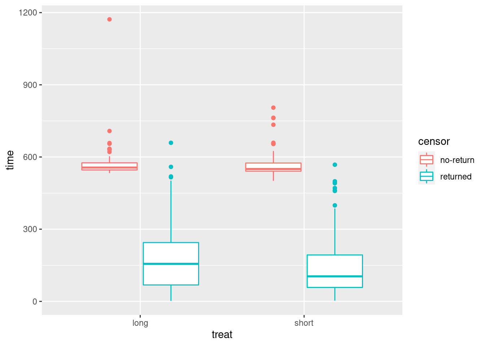
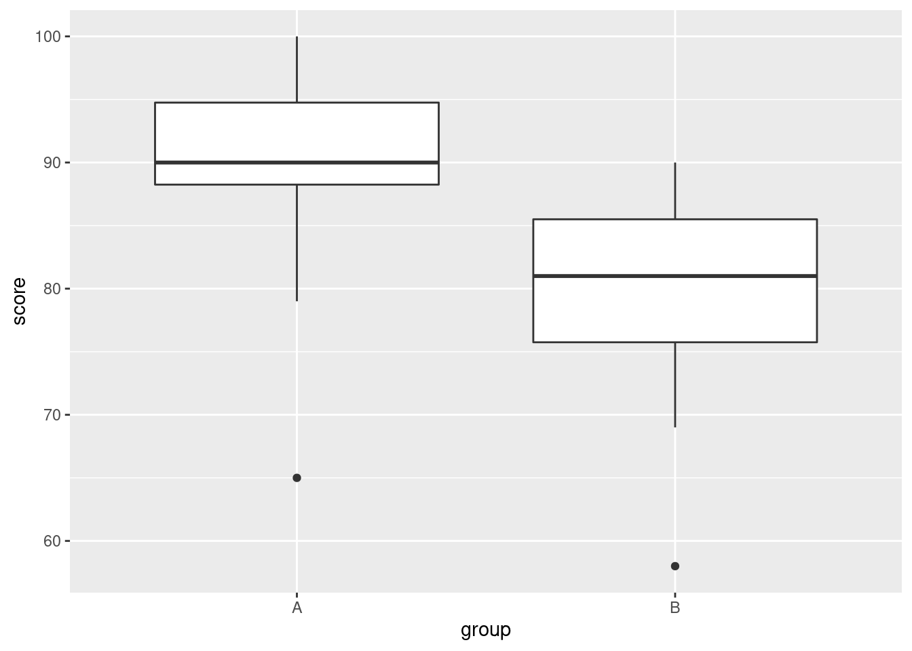

Chapter 9 The sign test and Mood’s median test
9.1 Running a maze
A researcher is trying to design a maze that can be run by rats in about 60 seconds. One particular maze was run by a sample of 21 rats, with the times shown in link.
- Read the data into R. What (if anything) are the data values delimited by?
Solution
Take a look at the data file first. There is only one column of
data, so you can treat it as being delimited by anything you like:
a space, or a comma (the file can also be treated as a
.csv), etc.:
##
## ── Column specification ─────────────────────────────────────────────────────
## cols(
## time = col_double()
## )- Run a sign test, doing it yourself as we did in class: count the number of values above and below 60, take the smaller of those, and find the probability of a value of that or smaller still on a binomial distribution with \(n=21\) and \(p=0.5\) (we have 21 data points), doubling the answer because the test is two-sided.
Solution
Count how many values are above and below 60:
5 above and 16 below. Then find out how likely it is that a binomial with \(n=21, p=0.5\) would produce 5 or fewer successes:
## [1] 0.01330185or if you prefer count upwards from 16:
## [1] 0.01330185and double it to get a two-sided P-value:
## [1] 0.0266037We’ll compare this with smmr in a moment.
- Install my package
smmr, if you haven’t already. To do this, you first need to install the packagedevtools(if you haven’t already), by going to the console and typing
When that’s all done, install smmr thus:
That all needs to be done only once. Then, each R Studio session where
you want to use smmr needs this:
As usual, only the library thing only needs to be done every
time.
When you have smmr installed, use sign_test from
that package to re-run your sign test. Do you get the same P-value?
Solution
The sign test function takes a data frame, an (unquoted) column name from that data frame of data to test the median of, and a null median (which defaults to 0 if you omit it):
## $above_below
## below above
## 16 5
##
## $p_values
## alternative p_value
## 1 lower 0.01330185
## 2 upper 0.99640131
## 3 two-sided 0.02660370This shows you two things: a count of the values below and above the null median, and then the P-values according to the various alternative hypotheses you might have.
In our case, we see again the 16 maze-running times below 60 seconds and 5 above (one of which was a long way above, but we don’t care about that here). We were testing whether the median was different from 60, so we look at the two-sided P-value of 0.0266, which is exactly what we had before.
If sign_test doesn’t work for you (perhaps because it needs
a function enquo that you don’t have), there is an
alternative function sign_test0 that doesn’t use it. It
requires as input a column of values (extracted from the data
frame) and a null median, thus:
## $above_below
## below above
## 16 5
##
## $p_values
## alternative p_value
## 1 lower 0.01330185
## 2 upper 0.99640131
## 3 two-sided 0.02660370The output should be, and here is, identical.
- Package
smmralso has a functionpval_sign, which has the same input assign_test, but with the null median first. Run it on your data and see what it gives.
Solution
Try it and see:
## [1] 0.0266037The two-sided P-value, and that is all. We’ll be using this in a minute.
Alternatively, there is also this, which needs a null median and a column as input:
## [1] 0.0266037- Obtain a 95% confidence interval for the median based on these
data. Do this two ways. First, use the trial and error way from class
(either the try-lots-of-values way or the bisection way; either is good).
Second, use
ci_medianfromsmmr. The latter takes as input a data frame, a column name (unquoted) and optionally aconf.levelthat defaults to 0.95.
Solution
The reason for showing you pval_sign in the previous
part is that this is a building block for the confidence interval.
What we do is to try various null medians
and find out which ones give P-values less than 0.05 (outside the
interval) and which ones bigger (inside).
We know that the value 60 is
outside the 95% CI, and the sample median is close to 50 (which we
expect to be inside), so sensible values to try for the upper end of
the interval would be between 50 and 60:
## [1] 0.0266037## [1] 0.6636238So, 55 is inside the interval and 58 is outside. I could investigate
further in similar fashion, but I thought I would try a whole bunch of null
medians all at once. That goes like this, rowwise because pval_sign expects one null-hypothesis median, not several all at once:
So values for the median all the way up to and including 57.5 are in the confidence interval.
Now for the other end of the interval. I’m going to do this a different way: more efficient, but less transparent. The first thing I need is a pair of values for the median: one inside the interval and one outside. Let’s try 40 and 50:
## [1] 0.00719738## [1] 1OK, so 40 is outside and 50 is inside. So what do I guess for the next value to try? I could do something clever like assuming that the relationship between hypothesized median and P-value is linear, and then guessing where that line crosses 0.05. But I’m going to assume nothing about the relationship except that it goes uphill, and therefore crosses 0.05 somewhere. So my next guess is halfway between the two values I tried before:
## [1] 0.07835388So, 45 is inside the interval, and my (slightly) improved guess at the bottom end of the interval is that it’s between 40 and 45. So next, I try halfway between those:
## [1] 0.026603742.5 is outside, so the bottom end of the interval is between 42.5 and 45.
What we are doing is narrowing down where the interval’s bottom end is. We started by knowing it to within 10, and now we know it to within 2.5. So if we keep going, we’ll know it as accurately as we wish.
This is called a “bisection” method, because at each step, we’re dividing our interval by 2.
There is one piece of decision-making at each step: if the P-value for the median you try is greater than 0.05, that becomes the top end of your interval (as when we tried 45); if it is less, it becomes the bottom end (when we tried 42.5).
This all begs to be automated into a loop. It’s not a
for-type loop, because we don’t know how many times we’ll be
going around. It’s a while loop: keep going while something
is true. Here’s how it goes:
lo <- 40
hi <- 50
while (abs(hi - lo) > 0.1) {
try <- (hi + lo) / 2
ptry <- pval_sign(try, times, time)
print(c(try, ptry))
if (ptry < 0.05) {
lo <- try
} else {
hi <- try
}
}## [1] 45.00000000 0.07835388
## [1] 42.5000000 0.0266037
## [1] 43.7500000 0.0266037
## [1] 44.37500000 0.07835388
## [1] 44.0625000 0.0266037
## [1] 44.2187500 0.0266037
## [1] 44.2968750 0.0266037## [1] 44.29688## [1] 0.0266037## [1] 44.375## [1] 0.07835388The loop stopped because 44.297 and 44.375 are less than 0.1
apart. The first of those is outside the interval and the second is
inside. So the bottom end of our interval is 44.375, to this
accuracy. If you want it more accurately, change 0.1 in the
while line to something smaller (but then you’ll be waiting
longer for the answer).
I put the print statement in the loop so that you could see
what values were being tried, and what P-values they were
producing. What happens with these is that the P-value jumps at each
data value, so you won’t get a P-value exactly 0.05; you’ll get one
above and one below.
Likewise, you can use the function with a zero on its name and feed it a column rather than a data frame and a column name:
tibble(meds = seq(55, 58, 0.25)) %>%
rowwise() %>%
mutate(pvals = with(times, pval_sign0(meds, time)))Or adapt the idea I had above for bisection.
All that was a lot of work, but I wanted you to see it all once, so that you
know where the confidence interval is coming from. smmr also
has a function ci_median that does all of the above without
you having to do it. As I first wrote it, it was using the trial and
error thing with rowwise, but I chose to rewrite it with the
bisection idea, because I thought that would be more accurate.
## [1] 44.30747 57.59766This is a more accurate interval than we got above. (The
while loop for the bisection keeps going until the two
guesses at the appropriate end of the interval are less than 0.01
apart, by default.)
You can change this by adding something like tol=1e-4 to the end of your ci-median.
If you want some other confidence level, you add conf.level
on the end, as you would for t.test:
## [1] 46.20444 55.49473A 75% CI, just for fun. This is a shorter interval than the 95% one, as it should be.
Likewise there is a ci_median0 that takes a column and an
optional confidence level:
## [1] 44.30747 57.59766## [1] 46.20444 55.49473with the same results. Try ci_median first, and if it
doesn’t work, try ci_median0.
9.2 Chocolate chips
A famous cookie manufacturer claims that their bags of chocolate chip cookies contain “more than 1100 chocolate chips on average”. A diligent group of students buys 16 bags of these cookies and counts the number of chocolate chips in each bag. The results are in http://www.utsc.utoronto.ca/~butler/c32/chips.txt.
- Read in and display (some of) the data.
Solution
I’ll pretend it’s a
.csv this time, just for fun. Give the data frame a
name different from chips, so that you don’t get
confused:
##
## ── Column specification ─────────────────────────────────────────────────────
## cols(
## chips = col_double()
## )That looks sensible.
- Build your own sign test in R for testing that the median is 1100 chocolate chips, against the alternative that it is greater. (Do this as in class: count the appropriate thing, compare it with an appropriate binomial distribution, and obtain a P-value.
Solution
The null median is 1100, so we count the number of values above and below:
The un-standard thing there is that we can put a logical condition
directly into the count. If you don’t think of that, you can
also do this, which creates a new variable less that is
TRUE or FALSE for each bag appropriately:
or the more verbose
Just one value below, with all the rest above. Getting the right P-value, properly, requires some careful thought (but you will probably get the right answer anyway). If the alternative hypothesis is true, and the median is actually bigger than 1100 (say, 1200), you would expect half the data values to be bigger than 1200 and half smaller. So more than half the data values would be bigger than 1100, and fewer than half of them would be less than 1100. So, if we are going to reject the null (as it looks as if we will), that small number of values below 1100 is what we want.
The P-value is the probability of a value 1 or less in a binomial distribution with \(n=16, p=0.5\):
## [1] 0.0002593994Or, equivalently, count up from 15:
## [1] 0.0002593994This is correctly one-sided, so we don’t have to do anything with it.
- Use my R package
smmrto reproduce your sign test above, and verify that you get consistent results. (See the maze-design question for instructions on installing this, if you haven’t yet.)
Solution
This will mean reading the output carefully:
## $above_below
## below above
## 1 15
##
## $p_values
## alternative p_value
## 1 lower 0.9999847412
## 2 upper 0.0002593994
## 3 two-sided 0.0005187988This time, we’re doing a one-sided test, specifically an
upper-tail test, since we are looking for evidence that the
median is greater than 1100. The results are exactly what we
got “by hand”: 15 values above and one below, and a P-value (look
along the upper line) of 0.00026.
The two-sided P-value of 0.00052 rounds to the same 0.0005 as SAS got.
Alternatively, you can do this:
## $above_below
## below above
## 1 15
##
## $p_values
## alternative p_value
## 1 lower 0.9999847412
## 2 upper 0.0002593994
## 3 two-sided 0.0005187988with the same result (but only go this way if you need to).
- Use
smmrto obtain a 95% confidence interval for the median number of chocolate chips per bag of cookies.
Solution
Once everything is in place, this is simplicity itself:
## [1] 1135.003 1324.9961135 to 1325. I would round these off to whole numbers, since the data values are all whole numbers. These values are all above 1100, which supports the conclusion we got above that the median is above 1100. This is as it should be, because the CI is “all those medians that would not be rejected by the sign test”.
Or,
## [1] 1135.003 1324.9969.3 The power of the sign test
I’ve mentioned several times that the sign test has less power than the \(t\)-test. Let’s investigate this with a specific example.
Let’s suppose we are testing \(H_0: \mu=40\) against \(H_a: \mu \ne 40\), where \(\mu\) is the population mean (and median, as we shall see). Our population actually has a normal distribution with mean 50 and SD 15, so that the null hypothesis is wrong and we want to reject it most of the time. On the other hand, the population actually is normally-distributed and so the \(t\)-test is the right one to use.
(This is an old question, so I tackle the simulated power differently than I did it in class this time. But see if you can follow what I do here.)
- Use
power.t.testto find the probability that a \(t\)-test correctly rejects the null hypothesis using a sample size of \(n=10\).
Solution
##
## One-sample t test power calculation
##
## n = 10
## delta = 10
## sd = 15
## sig.level = 0.05
## power = 0.4691805
## alternative = two.sidedThe power is 0.469. Not great, but we’ll see how this stacks up against the sign test.
- What code in R would draw a random sample of size 10 from the true population distribution and save the sample in a variable?
Solution
The data actually have a normal distribution with mean 50 and
SD 15, so we use rnorm with this mean and SD, obtaining
10 values:
## [1] 48.43450 68.00747 24.14618 42.19873 52.72728 70.43299 21.57519 59.68501
## [9] 41.33972 65.89719- What code would count how many of the sampled values are less than 40 and how many are greater (or equal)?
Solution
The way we know this is to put x into a data frame first:
2 values less (and 8 greater-or-equal).
- It turns out the sign test would reject \(H_0: M=40\) against
\(H_a: M \ne 40\) at \(\alpha=0.05\) if the smaller of the numbers in the
last part is 1 or less. (\(M\) is the population median.)
Add to your pipeline to obtain
TRUEif you should reject the null for your data andFALSEotherwise.
Solution
This is actually easier than you might think. The output from
count is a data frame with a column called n,
whose minimum value you want. I add to my pipeline:
This will fail sometimes. If all 10 of your sample values are greater
than 40, which they might turn out to be, you’ll get a table with only
one line, FALSE and 10; the minimum of the n values
is 10 (since there is only one), and it will falsely say that you
should not reject. The fix is
tibble(x) %>% count(x<40) %>%
summarize(the_min=min(n)) %>%
mutate(is_rejected=(the_min<=1 | the_min==10))The above is almost the right thing, but not quite: we only want that value
that I called is_rejected, rather than the whole data frame,
so a pull will grab it:
tibble(x) %>% count(x<40) %>%
summarize(the_min=min(n)) %>%
mutate(is_rejected=(the_min<=1 | the_min==10)) %>%
pull(is_rejected)## [1] FALSEYou might be wondering where the “1 or less” came from. Getting a P-value for the sign test involves the binomial distribution: if the null is correct, each data value is independently either above or below 40, with probability 0.5 of each, so the number of values below 40 (say) is binomial with \(n=10\) and \(p=0.5\). The P-value for 1 observed value below 40 and the rest above is
## [1] 0.02148438which is less than 0.05; the P-value for 2 values below 40 and the rest above is
## [1] 0.109375which is bigger than 0.05.
You might have encountered the term “critical region” for a test. This is the values of your test statistic that you would reject the null hypothesis for. In this case, the critical region is 1 and 0 observations below 40, along with 1 and 0 observations above 40.
When you’re thinking about power, I think it’s easiest to think in terms of the critical region (rather than directly in terms of P-values) since you have a certain \(\alpha\) in mind all the way through, 0.05 in the power examples that I’ve done. The steps are then:
Work out the critical region for your test, the values of the test statistic (or sample mean or sample count) that would lead to rejecting the null hypothesis.
Under your particular alternative hypothesis, find the probability of falling into your critical region.
When I say “work out”, I mean either calculating (along the lines of STAB57), or simulating, as we have done here.
- Simulate the above process 1000 times: draw a random sample from a normal distribution of size 10 with mean 50 and SD 15, count the number of values below 40, reject if the minimum of those is 0, 1, 9, or 10, then count the number of rejections out of 1000.
Solution
Set up a dataframe with a column (called, maybe, sim) that counts the number of simulations you are doing, and then use rowwise to take a random sample in each row and extract what you need from it.
I start with setting the random number seed, so it comes out the same each time.
Each sample has 10 values in it, not just one, so you need the list around the rnorm. Note that sample is labelled as a list-column.
Now we have to count how many of the sample values are less than 40:
set.seed(457299)
tibble(sim = 1:1000) %>%
rowwise() %>%
mutate(sample = list(rnorm(10, 50, 15))) %>%
mutate(less = list(sample<40)) %>%
mutate(counted = sum(less)) This is a bit of a programmer’s trick. In R, less contains a vector of 10 TRUE or FALSE values, according to whether the corresponding value in sample is less than 40 or not. In R (and many other programming languages), the numeric value of TRUE is 1 and of FALSE is 0, so you count how many TRUE values there are by adding them up. To verify that this worked, we should unnest sample and less:
set.seed(457299)
tibble(sim = 1:1000) %>%
rowwise() %>%
mutate(sample = list(rnorm(10, 50, 15))) %>%
mutate(less = list(sample<40)) %>%
mutate(counted = sum(less)) %>%
unnest(c(sample, less))In the first sample, 38.8, 39.5, and 33.8 are less than 40, correctly identified so in less, and the counted column shows that the first sample did indeed have 3 values less than 40. You can check a few of the others as well, enough to convince yourself that this is working.
Next, the sign test will reject if there are 0, 1, 9 or 10 values less than 40 (you might be guessing that the last two will be pretty unlikely), so make a column called reject that encapsulates that, and then count how many times you rejected in your simulations. I don’t need my unnest any more; that was just to check that everything was working so far:
set.seed(457299)
tibble(sim = 1:1000) %>%
rowwise() %>%
mutate(sample = list(rnorm(10, 50, 15))) %>%
mutate(less = list(sample<40)) %>%
mutate(counted = sum(less)) %>%
mutate(reject = (counted<=1 | counted >= 9)) %>%
count(reject)My simulated power is 0.243
This is all liable to go wrong the first few times, so make sure that
each line works before you go on to the next, as I did.
While you’re debugging, try it with a
small number of random samples like 5. (It is smart to have a variable called nsim which you set to a small number like 5 when you are testing, and than to 1000 when you run the real thing, so that the first line of the pipeline is then tibble(sim = 1:nsim).)
If you were handing something like this in, I would only want to see your code for the final pipeline that does everything, though you could and should have some words that describe what you did.
I’m now thinking a better way to do this is to write a function that takes a sample (in a vector) and returns a TRUE or FALSE according to whether or not a median of 40 would be rejected for that sample:
is_reject=function(x) {
tibble(x=x) %>%
mutate(counted = (x < 40)) %>%
summarize(below = sum(counted)) %>%
summarize(is_rejected = (below<=1 | below>=9)) %>%
pull(is_rejected)
}
is_reject(c(35, 45, 55))## [1] TRUE## [1] FALSENow, we have to use that:
set.seed(457299)
tibble(sim = 1:1000) %>%
rowwise() %>%
mutate(sample = list(rnorm(10, 50, 15))) %>%
mutate(reject = is_reject(sample)) %>%
count(reject)This is a bit cleaner because the process of deciding whether each sample leads to a rejection of the median being 40 has been “outsourced” to the function, and the pipeline with the rowwise is a lot cleaner: take a sample, decide whether that sample leads to rejection, and count up the rejections.
- Which is more powerful in this case, the sign test or the \(t\)-test? How do you know?
Solution
The power of the sign test is estimated as 0.243, which is quite a bit less
than the power of the \(t\)-test, which we found back in (a) to be
0.469. So the \(t\)-test, in this situation where it is valid, is
the right test to use: it is (i) valid and (ii) more powerful.
So the \(t\)-test is more powerful. One way to think about how
much more powerful is to ask “how much smaller of a sample size would be needed for the \(t\)-test to have the same power as this sign test?”
The power of my sign test was 0.243, so in
power.t.test we set
power equal to that and
omit the sample size n:
##
## One-sample t test power calculation
##
## n = 5.599293
## delta = 10
## sd = 15
## sig.level = 0.05
## power = 0.243
## alternative = two.sidedA sample of size 6 gives the same power for the \(t\)-test that a
sample of size 10 does for the sign test. The ratio of these two
sample sizes is called the relative efficiency of the two
tests: in this case, the \(t\)-test is \(10/6=1.67\) times more
efficient. The data that you have are being used “more efficiently”
by the \(t\)-test.
It is possible to derive
Meaning, I forget how to do it. But it has something to do with looking at alternatives that are very close to the null.
the limiting relative efficiency of
the \(t\) test relative to the sign test when the data are actually
normal, as the sample size gets larger. This turns out not to
depend on how far wrong the null is (as long as it is the same for
both the \(t\)-test and the sign test). This “asymptotic relative efficiency” is \(\pi/2=1.57\).
Our relative efficiency for power
0.243, namely 1.67, was pretty close to this, even though our
sample sizes 10 and 6 are not especially close to infinity.
This says that, if your data are actually from a normal
distribution, you do a lot better to use the \(t\)-test than the
sign test, because the sign test is wasteful of data (it only uses
above/below rather than the actual values).
If your data are not from a normal distribution, then the
story can be very different.
Of course you knew I would investigate this. There is a
distribution called the “Laplace” or “double exponential”
distribution, that has very long tails.
If you’ve ever run into the exponential distribution, you’ll recall that this is right skewed with a very long tail. The Laplace distribution looks like two of these glued back to back.
The distribution is not in
base R, but there is a package called smoothmest that
contains a function rdoublex to generate random values from
this distribution. So we’re going to do a simulation investigation
of the power of the sign test for Laplace data, by the same
simulation technique that we did above. Like the normal, the Laplace
distribution is symmetric, so its mean and median are the same
(which makes our life easier).
This is about the only way in which the normal and Laplace distributions are alike.
Let’s test the hypothesis that the median is zero. We’ll suppose that
the true median is 0.5 (this is called mu in
rdoublex). The first problem we run into is that we can’t use
power.t.test because they assume normal data, which we are
far from having. So we have to do two simulations: one to simulate the
power of the \(t\) test, and one to simulate the power of the sign test.
To simulate the \(t\) test, we first have to generate some Laplace data with the true mean of 0.5. We’ll use a sample size of 50 throughout these simulations.
## [1] -0.33323285 0.70569291 -1.22513053 0.68517708 0.87221482 0.49250051
## [7] 0.26700527 1.90236874 0.53288312 1.37374732 0.72743434 0.46634071
## [13] 0.43581431 -0.01545866 0.18594908 -0.40403202 -0.13540289 0.83862694
## [19] -0.23360644 -0.74050354 2.92089551 -2.72173880 0.51571185 1.23636045
## [25] 0.82921382 1.72456334 0.07903058 0.74789589 0.90487190 2.52310082
## [31] 3.13629814 0.81851434 0.74615575 -0.26068744 2.70683355 1.46981530
## [37] 1.45646489 1.20232517 6.65249860 -0.51575026 -0.07606399 2.11338640
## [43] -1.20427995 1.70986104 -1.66466321 0.55346854 0.33908531 0.72100677
## [49] 0.92025176 0.98922656This seems to have some unusual values, far away from zero:

You see the long tails compared to the normal.
Now, we feed these values into t.test and see whether we
reject a null median of zero (at \(\alpha=0.05\)):
##
## One Sample t-test
##
## data: rl
## t = 3.72, df = 49, p-value = 0.0005131
## alternative hypothesis: true mean is not equal to 0
## 95 percent confidence interval:
## 0.3399906 1.1388911
## sample estimates:
## mean of x
## 0.7394408Or we can just pull out the P-value and even compare it to 0.05:
## [1] 0.0005130841## [1] TRUEThis one has a small P-value and so the null median of 0 should be (correctly) rejected.
We’ll use these ideas to simulate the power of the \(t\)-test for these data, testing a mean of 0. This uses the same ideas as for any power simulation; the difference here is the true distribution:
tibble(sim = 1:1000) %>%
rowwise() %>%
mutate(sample = list(rdoublex(50, mu = 0.5))) %>%
mutate(t_test = list(t.test(sample, mu = 0))) %>%
mutate(t_pval = t_test$p.value) %>%
count(t_pval <= 0.05)And now we simulate the sign test. Since what we want is a P-value
from a vector, the easiest way to do this is to use
pval_sign0 from smmr, which returns exactly the
two-sided P-value that we want, so that the procedure is a step simpler:
tibble(sim = 1:1000) %>%
rowwise() %>%
mutate(sample = list(rdoublex(50, mu = 0.5))) %>%
mutate(sign_pval = pval_sign0(0, sample)) %>%
count(sign_pval <= 0.05)For data from this Laplace distribution, the power of this \(t\)-test is 0.696, but the power of the sign test on the same data is 0.761, bigger. For Laplace-distributed data, the sign test is more powerful than the \(t\)-test.
This is not to say that you will ever run into data that comes from the Laplace distribution. But the moral of the story is that the sign test can be more powerful than the \(t\)-test, under the right circumstances (and the above simulation is the “proof” of that statement). So a blanket statement like “the sign test is not very powerful” needs to be qualified a bit: when your data come from a sufficiently long-tailed distribution, the sign test can be more powerful relative to the \(t\)-test than you would think.
I finish by “unloading” the two packages that got loaded:
## Warning: 'MASS' namespace cannot be unloaded:
## namespace 'MASS' is imported by 'PMCMRplus', 'lme4' so cannot be unloaded9.4 Sugar in breakfast cereals
The data for this question are in http://www.utsc.utoronto.ca/~butler/c32/cereal-sugar.txt. The story here is whether breakfast cereals marketed to children have a lot of sugar in them; in particular, whether they have more sugar on average than cereals marketed to adults.
- Read in the data (to R) and display the data set. Do you have a variable that distinguishes the children’s cereals from the adults’ cereals, and another that contains the amount of sugar?
Solution
##
## ── Column specification ─────────────────────────────────────────────────────
## cols(
## who = col_character(),
## sugar = col_double()
## )The variable who is a categorical variable saying who the
cereal is intended for, and the variable sugar says how much
sugar each cereal has.
- Calculate the mean sugar content for each group of cereals (the adults’ ones and the children’s ones). Do they look similar or different?
Solution
group_by and summarize:
These means look very different, though it would be better to look at a boxplot (coming up in a moment).
- Make side-by-side boxplots of the sugar contents of the two types of cereal. What do you see that is out of the ordinary?
Solution
The usual:

I see outliers: two high ones on the adults’ cereals, and one high and one low on the children’s cereals.
My thought above about the means being very different is definitely supported by the medians being very different on the boxplots. We should have no trouble declaring that the “typical” amounts of sugar in the adults’ and children’s cereals are different.
- Explain briefly why you would not trust a two-sample \(t\)-test with these data. (That is, say what the problem is, and why it’s a problem.)
Solution
The problem is the outliers (which is rather a giveaway), but the reason it’s a problem is that the two-sample \(t\)-test assumes (approximately) normal data, and a normal distribution doesn’t have outliers. Not only do you need to note the outliers, but you also need to say why the outliers cause a problem in this case. Anything less than that is not a complete answer.
- Run a suitable test to see whether the “typical” amount of sugar differs between adult’s and children’s cereals. Justify the test that you run. (You can use the version of your test that lives in a package, if that is easier for you.) What do you conclude, in the context of the data?
Solution
Having ruled out the two-sample \(t\)-test, we are left with Mood’s
median test. I didn’t need you to build it yourself, so you can
use package smmr to run it with:
## $table
## above
## group above below
## adults 2 19
## children 18 1
##
## $test
## what value
## 1 statistic 2.897243e+01
## 2 df 1.000000e+00
## 3 P-value 7.341573e-08We conclude that there is a difference between the median amounts of sugar between the two groups of cereals, the P-value of 0.00000007 being extremely small.
Why did it come out so small? Because the amount of sugar was smaller than the overall median for almost all the adult cereals, and larger than the overall median for almost all the children’s ones. That is, the children’s cereals really do have more sugar.
Mood’s median test doesn’t come with a confidence interval (for the difference in population medians), because whether or not a certain difference in medians is rejected depends on what those medians actually are, and the idea of the duality of the test and CI doesn’t carry over as we would like.
My daughter likes chocolate Cheerios, but she also likes Shredded Wheat and Bran Flakes. Go figure. (Her current favourite is Raisin Bran, even though she doesn’t like raisins by themselves.)
Mood’s median test is the test we should trust, but you might be curious about how the \(t\)-test stacks up here:
##
## Welch Two Sample t-test
##
## data: sugar by who
## t = -11.002, df = 37.968, p-value = 2.278e-13
## alternative hypothesis: true difference in means is not equal to 0
## 95 percent confidence interval:
## -42.28180 -29.13925
## sample estimates:
## mean in group adults mean in group children
## 10.90000 46.61053The P-value is even smaller, and we have the advantage of getting a confidence interval for the difference in means: from about 30 to about 40 units less sugar in the adult cereals. Whatever the units were.
9.5 Fear of math
Two new short courses have been proposed for helping students who suffer from severe math phobia. The courses are labelled A and B. Ten students were randomly allocated to one of these two courses, and each student’s score on a math phobia test was recorded after they completed their course. The math phobia test produces whole-number scores between 0 and 10, with a higher score indicating a greater fear of mathematics. The data can be found in link. We start with R for this question.
- Read in the data and check, however you like, that you have 10 observations, 5 from each course.
Solution
This doesn’t need much comment:
##
## ── Column specification ─────────────────────────────────────────────────────
## cols(
## course = col_character(),
## phobia = col_double()
## )This will do, counting the a and b. Or, to save
yourself that trouble:
Five each. The story is to get the computer to do the grunt work for you, if you can make it do so. Other ways:
and this:
## course
## a b
## 5 5giving the same answer. Lots of ways.
Extra: there is an experimental design issue here. You might have noticed that each student did only one of the courses. Couldn’t students do both, in a matched-pairs kind of way? Well, it’s a bit like the kids learning to read in that if the first of the courses reduces a student’s anxiety, the second course won’t appear to do much good (even if it actually would have been helpful had the student done that one first). This is the same idea as the kids learning to read: once you’ve learned to read, you’ve learned to read, and learning to read a second way won’t help much. The place where matched pairs scores is when you can “wipe out” the effect of one treatment before a subject gets the other one. We have an example of kids throwing baseballs and softballs that is like that: if you throw one kind of ball, that won’t affect how far you can throw the other kind.
- Do a two-sample \(t\)-test to assess whether there is a difference in mean phobia scores after the students have taken the two courses. What do you conclude? (You have no That is, before looking at the data. This is Latin. It’s also the place that the Bayesian prior distribution comes from. The posterior distribution comes from the Latin a posteriori, which means afterwards, that is, after you have looked at the data. reason to suppose that a particular one of the tests will produce a higher mean than the other, so do a two-sided test.)
Solution
A two-sided test is the default, so there is not much to do here:
##
## Welch Two Sample t-test
##
## data: phobia by course
## t = 0.83666, df = 4.4199, p-value = 0.4456
## alternative hypothesis: true difference in means is not equal to 0
## 95 percent confidence interval:
## -3.076889 5.876889
## sample estimates:
## mean in group a mean in group b
## 6.8 5.4The P-value of 0.4456 is nowhere near less than 0.05, so there is no
evidence at all that the
mean math phobia scores are different between the two courses.
- Draw boxplots of the math phobia scores for each group (one line of code). What is the most striking thing that you notice?
Solution

Boxplot a is just weird. The bar across the middle is
actually at the top, and it has no bottom. (Noting something sensible
like this is enough.) Boxplot b is hugely spread
out.
The two groups have very different spreads, but that is not a problem as long as we remember to do the Welch-Satterthwaite test that does not assume equal spreads. This is the default in R, so we are good, at least with that.
By way of explanation: the course a scores have a number of
values equal so that the 3rd quartile and the median are the name, and
also that the first quartile and the minimum value are the same:
## course phobia
## Length:5 Min. :6.0
## Class :character 1st Qu.:6.0
## Mode :character Median :7.0
## Mean :6.8
## 3rd Qu.:7.0
## Max. :8.0The phobia scores from course A are two 6’s, two 7’s and an 8. The median and third quartile are both 7, and the first quartile is the same as the lowest value, 6.
Technique note: I wanted to do two things with the phobia scores from
course A: count up how many of each score, and show you what the
five-number summary looks like. One pipe won’t do this (the pipe
“branches”), so I saved what I needed to use, before it branched,
into a data frame tmp and then used tmp twice. Pipes
are powerful, but not all-powerful.
- Explain briefly why a \(t\)-test would not be good for these data. (There are two things that you need to say.)
Solution
The easiest way to structure this is to ask yourself first what the
\(t\)-test needs, and second whether you have it.
The \(t\)-test assumes (approximately) normal data. The boxplot for
group a doesn’t even look symmetric, and the one for group
b has an oddly asymmetric box. So I think the normality is
in question here, and therefore another test would be
better. (This is perhaps a bit glib of an answer, since there are
only 5 values in each group, and so they can certainly look
non-normal even if they actually are normal, but these values are
all integers, so it is perhaps wise to be cautious.)
We have the machinery to assess the normality for these, in one shot:
ggplot(math, aes(sample = phobia)) +
stat_qq() + stat_qq_line() +
facet_wrap(~course, ncol = 1, scales = "free")
I don’t know what you make of those, but they both look pretty
straight to me (and there are only five observations, so it’s hard to
judge). Course b maybe has a “hole” in it (three large
values and two small ones). Maybe. I dunno. What I would really
be worried about is outliers, and at least we don’t have those.
I mentioned in class that the \(t\)-tests are robust to non-normality. I
ought to have expanded on that a bit: what really makes the \(t\)-test
still behave itself with non-normality is when you have large
samples, that is, when the Central Limit Theorem has had a chance to
take hold. (That’s what drives the normality not really being
necessary in most cases.) But, even with small samples, exact
normality doesn’t matter so much. Here, we have two tiny samples, and
so we have to insist a bit more, but only a bit more, on a
more-or-less normal shape in each group. (It’s kind of a double
jeopardy in that the situation where normality matters most, namely
with small samples, is where it’s the hardest to judge, because
samples of size 5 even from a normal distribution can look very
non-normal.)
But, the biggest threats to the \(t\)-test are big-time skewness and
outliers, and we are not suffering too badly from those.
- Run a suitable test to compare the “typical” scores for the two courses. (You can use the version from a package rather than building your own.) What do you conclude?
Solution
This is an invite to use smmr:
## $table
## above
## group above below
## a 1 2
## b 2 2
##
## $test
## what value
## 1 statistic 0.1944444
## 2 df 1.0000000
## 3 P-value 0.6592430We are nowhere near rejecting equal medians; in fact, both courses are very close to 50–50 above and below the overall median.
If you look at the frequency table, you might be confused by something: there were 10 observations, but there are only \(1+2+2+2=7\) in the table. This is because three of the observations were equal to the overall median, and had to be thrown away:
The overall median was 7. Because the actual data were really discrete (the phobia scores could only be whole numbers), we risked losing a lot of our data when we did this test (and we didn’t have much to begin with). The other thing to say is that with small sample sizes, the frequencies in the table have to be very lopsided for you to have a chance of rejecting the null. Something like this is what you’d need:
x <- c(1, 1, 2, 6, 6, 6, 7, 8, 9, 10)
g <- c(1, 1, 1, 1, 1, 2, 2, 2, 2, 2)
d <- tibble(x, g)
median_test(d, x, g)## $table
## above
## group above below
## 1 0 3
## 2 4 0
##
## $test
## what value
## 1 statistic 7.000000000
## 2 df 1.000000000
## 3 P-value 0.008150972I faked it up so that we had 10 observations, three of which were equal to the overall median. Of the rest, all the small ones were in group 1 and all the large ones were in group 2. This is lopsided enough to reject with, though, because of the small frequencies, there actually was a warning about “chi-squared approximation may be inaccurate”. There was, in the chisq.test inside median-test, but in smmr I didn’t pass that warning back to the outside world.
9.6 Medical instructions
Do people understand medical instructions better at certain times of the day? In a study, students in a grade 12 class are randomly divided into two groups, A and B. All students see a video describing how to use an infant forehead thermometer. The students in Group A see the video at 8:30 am, while the students in Group B see the same video at 3:00 pm (on the same day). The next day, all the students are given a test on the material in the video (graded out of 100). The observed scores are in link (values separated by spaces).
- Read the data into R and display the (first ten) values.
Solution
Separated by spaces, so read_delim:
##
## ── Column specification ─────────────────────────────────────────────────────
## cols(
## group = col_character(),
## score = col_double()
## )- Obtain a suitable plot that will enable you to assess the assumptions for a two-sample \(t\)-test.
Solution
We need the values in each group to be approximately normally distributed. Side-by-side boxplots will do it:

or, if you like, separate (facetted) normal quantile plots, which I would do this way:

- Why might you have doubts about using a two-sample \(t\)-test here?
Solution
We are looking for non-normality in at least one of the
groups. Here, both groups have an outlier at the low end that
would be expected to pull the mean downward. I don’t think there
is left-skewness here, since there is no particular evidence of
the high-end values being bunched up: the problem in both cases
with normality is at the low end.
One way or another, I’m expecting you to have noticed the outliers.
Extra: last year, when I first drew the normal quantile plots,
there was no stat_qq_line, so you had to imagine where
the line went if you did it this way. Without the line, these
plots look somewhat curved, which would have pointed to
left-skewness, but now we see that the lowest observation is too
low, and maybe the second-lowest one as well, while the other
observations are just fine.
- Run Mood’s median test as in class (without using
smmr). What do you conclude, in the context of the data? What recommendation would you make about the time of day to see the video? (You might get a warning about “chisquared approximation being incorrect”, which you can ignore here.)
Solution
The overall median first:
87.5, which is not equal to any of the data values (they are all integers). This will avoid any issues with values-equal-to-median later.
Then, create and save a table of the value by group and above/below median. You can count either above or below (it comes out equivalently either way):
##
## group FALSE TRUE
## A 2 8
## B 7 1Then, chi-squared test for independence (the null) or association of
some kind (the alternative). The correct=F is saying not to
do Yates’s correction, so that it would come out the same if you were
doing it by hand (“observed minus expected, squared, divided by expected”
and all that stuff).
## Warning in chisq.test(tab, correct = F): Chi-squared approximation may be
## incorrect##
## Pearson's Chi-squared test
##
## data: tab
## X-squared = 8.1, df = 1, p-value = 0.004427The P-value is 0.0044, which is (much) smaller than 0.05, and therefore you can reject independence and conclude association: that is, whether a student scores above or below the median depends on which group they are in, or, that the median scores are different for the two groups.
The warning is because the expected frequencies are on the small side (if you have done this kind of problem by hand, you might remember something about “expected frequencies less than 5”. This is that.) Here, the P-value is so small that we can afford to have it be inaccurate by a bit and still not affect the conclusion, so I think we are safe.
As for which group is better, well, the easiest way is to go back to your boxplots and see that the median for group A (8:30 am) is substantially higher than for group B (3:00pm). But you can also see it from your frequency table, if you displayed it:
##
## group FALSE TRUE
## A 2 8
## B 7 1Most of the people in the 8:30 am group scored above the median, and most of the people in the 3:00 pm group scored below the median. So the scores at 8:30 am were better overall.
As I write this, it is just after 3:00 pm and I am about to make myself a pot of tea!
Extra: about that correct=F thing. There was a point of view for a
long time that when you are dealing with a \(2 \times 2\) table, you can
get better P-values by, before squaring “observed minus expected”,
taking 0.5 away from the absolute value of the difference. This is
called Yates’s correction. It is in the same spirit as the
“continuity correction” that you might have encountered in the
normal approximation to the binomial, where in the binomial you have
to have a whole number of successes, but the normal allows fractional
values as well. In about the 1960s, the usefulness of Yates’s
correction was shot down, for general contingency tables. There is,
however, one case where it is useful, and that is the case
where the row totals and column totals are fixed.
What do I mean by that? Well, first let’s look at a case where the totals are not all fixed. Consider a survey in which you want to see whether males and females agree or disagree on some burning issue of the day. You collect random samples of, say, 500 males and 500 females, and you count how many of them say Yes or No to your statement. To simplify things, we’ll assume that everyone gave a Yes or a No answer, though you could add a column like No answer if you wanted to make it more realistic. You might get results like this:
Yes No Total
Males 197 303 500
Females 343 157 500
Total 540 460 1000
In this table, the row totals must be 500, because you asked this many males and this many females, and each one must have answered something. The column totals, however, are not fixed: you didn’t know, ahead of time, that 540 people would answer “yes”. That was just the way the data turned out, and if you did another survey with the same design, you’d probably get a different number of people saying “yes”.
For another example, let’s go back to Fisher (yes, that Fisher). A “lady” of his acquaintance claimed to be able, by drinking a cup of tea with milk and sugar in it, whether the milk or the sugar had been added first. Fisher, or, more likely, his housekeeper, prepared 8 cups of tea, 4 with milk first and 4 with sugar first. The lady knew that four of the cups had milk first, and her job was to say which four. The results might have been like this:
Actual
Milk first sugar first Total
Lady Milk first 3 1 4
says sugar first 1 3 4
Total 4 4 8
This time, all of the row totals and all of the column totals must be 4, regardless of what the lady thinks. Even if she thinks 5 of the cups of tea actually had milk first, she is going to pick 4 of them to say that they have milk first, since she knows there are only 4. In this case, all of the row and column totals are fixed at 4, and the right analysis is called Fisher’s Exact Test, based on the hypergeometric distribution. In a \(2\times 2\) table like this one, there is only one “degree of freedom”, since as soon as you specify one of the frequencies, say the number of cups where the lady said milk first and they actually were milk first, you can work out the others. But, leaving that aside, the usual chi-squared analysis is a perfectly good approximation, especially if the frequencies are large, and especially if you use Yates’s correction.
It is clear that Fisher must have been English, since he was able to get a publication out of drinking tea.
How does that apply to Mood’s median test? Well, let’s remind ourselves of the table we had:
##
## group FALSE TRUE
## A 2 8
## B 7 1We know how many students were in each group: 10 in group A and 8 in B. So the row totals are fixed. What about the columns? These are whether each observation was above or below the overall median. There were 18 observations altogether, so there must be 9 above and 9 below. Except in the case of the previous problem, where there were multiple observations equal to the overall median. Which we ignore for the moment. So the column totals are fixed as well. All totals fixed, so we should be using Yates’s correction. I didn’t, because I wanted to keep things simple, but I should have done.
R’s chisq.test by default always uses Yates’s
correction, and if you don’t want it, you have to say
correct=F. Which is why I have been doing so all through.
- Run Mood’s median test on these data using my
smmrpackage, and verify that you get the same answer.
Solution
Not much to it, since the data is already read in:
## $table
## above
## group above below
## A 8 2
## B 1 7
##
## $test
## what value
## 1 statistic 8.100000000
## 2 df 1.000000000
## 3 P-value 0.004426526Identical, test statistic, degrees of freedom and P-value. The table
of frequencies is also the same, just with columns rearranged. (In
smmr I counted the number of values below the overall median,
whereas in my build-it-yourself I counted the number of
values above.)